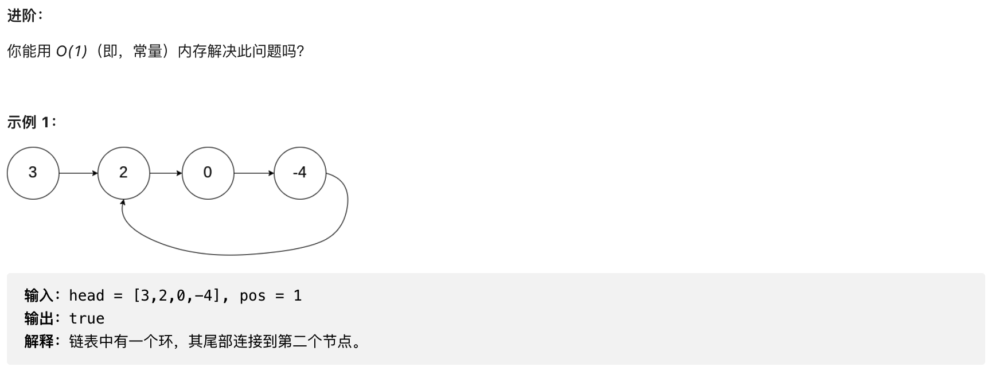

日拱一卒，功不唐捐。
Algorithm——算法题
循环链表
问题描述：
给定一个链表，判断链表中是否有环。
如果链表中有某个节点，可以通过连续跟踪 next 指针再次到达，则链表中存在环。 为了表示给定链表中的环，我们使用整数 pos 来表示链表尾连接到链表中的位置（索引从 0 开始）。 如果 pos 是 -1，则在该链表中没有环。注意：pos 不作为参数进行传递，仅仅是为了标识链表的实际情况。
如果链表中存在环，则返回 true 。 否则，返回 false 。

解题思路：
- 首先第一个想到的思路就是：
- 创建一个集合，用于存放每一个遍历过的节点；
- 遍历给定的链表，将每一个元素都放入上一步创建的集合当中；
- 在遍历的过程中，判断当前节点是否存在于集合当中，如果存在则说明，是循环链表；
- 其次，遍历到链表末尾的时候，next指向的为 null，则说明不是循环链表；
- 然后，想到的第二个思路就是：
- 用两个指针，分别是快慢指针；
- 快指针步长是慢指针的两倍（三倍也行）;
- 一直这样遍历下去，如果是循环链表的话，则快慢指针终会相遇；
- 否则，当快指针的next或者慢指针的next指向null时，则说明不是循环链表
解答代码：
1 | // 解法一： |
Review——阅读一篇英文文章
看法：
- 这篇文章用了一个非常生动形象的例子阐述了瀑布型开发模型的弊端，并提出了一下一些思考点：
- 能够看到产品3-5年后的样子吗？
- 在未来还需要投入多少工作量才能让产品上线？
- 如果第一个版本能够使产品更稳定地被更高的客户采用，那么团队是否有可能对产品的关键区域进行返工？
- 我们有哪些决定会限制或者改变我们产品最终的形态？
- 在快速迭代的同时，我们能够保证产品基础功能的稳定运行吗？
- 是否存在有可以重构的模块或者部分？
Tip——学习一个技巧
设计原则——贫血模型与充血模型
- 基于贫血模型的 MVC 三层架构开发模式，是一种面向过程的编程风格，被称为“反模式”。领域驱动设计是基于充血模型的开发模式，越来越被人提倡。
贫血模型：
贫血模型的定义：
- 在大多数的后端项目中，Entity 和 DAO(Repository) 组成数据访问层，BO 和 Service 组成业务逻辑层，VO 和 Controller 组成接口层。BO 是一个纯粹的数据结构，只包含数据，不包含任何业务逻辑。业务逻辑集中在 Service 中。通过 Service 来操作 BO。Service 层的数据和业务逻辑，被分割为 BO 和 Service 两个类。这种 BO 不包含业务逻辑的类，就叫做 贫血模型。贫血模型将数据与操作分离，破坏了面向对象的封装特性，所以说是一种典型的面向对象的编程风格。
充血模型：
领域驱动设计
- DDD, 主要用来指导如何解耦业务系统，划分业务模块，定义业务领域模型及其交互。（2004年提出，但是由于微服务的盛行加速了 DDD 的兴起）
- 做好 DDD 的关键是：看人对自己所做业务的熟悉程度，而不是对领域驱动设计这个概念本身的掌握程度。
充血模型的定义：
- 数据和对应的业务逻辑被封装到同一个类中国，因此，充血模型满足面向对象的封装特性，是典型的面向对象编程风格。
- 基于充血模型的DDD开发模式实现的代码，也是按照 MVC 三层架构分层的。Controller 层负责暴露接口，Repository 层负责数据存取， Service 层负责核心业务逻辑。区别主要在 Service 层。
- 基于贫血模型的传统的开发模式，重 Service 轻 BO；基于充血模型的 DDD 开发模式，轻 Service 重 Domain.
贫血模型之所以受欢迎的原因：
- 业务简单，基本就是基于SQL的CRUD操作，无需动脑子精心设计充血模型，贫血模型就足以应付这种简单业务的工作。
- 充血模型的设计要比贫血模型更加有难度。充血模型是一种面向对象的编程风格，一开始就要设计好针对数据要暴露那些操作，定义哪些业务逻辑。贫血模型只需要定义数据，后续有新的功能开发需求，就在 Service 层定义操作，不需要是事先做太多设计。
- 思维固化。这种贫血模型已成为 Web 开发中事实上的标准，难以改变。
充血模型的应用场景：
- 基于贫血模型的传统开发模式，比较适合业务比较简单的系统开发。
- 基于充血模型的DDD开发模式，更适合业务复杂的系统开发。如：
- 包含各种利息计算模型；
- 还款模型等复杂业务的金融系统
- 一句话概括平时的开发：街道一个后端接口的开发需求的时候，就去看接口需要的数据对应到数据库中国，需要哪张表或者哪几张表，然后思考如何编写SQL语句来获取数据。之后就是定义 Entity、BO、VO，然后模板式地往对应的 Repository、Service、Controller 类中添加代码。
- 在基于充血模型的 DDD 的开发模式下，我们需要事先理清楚所有的业务，定义领域模型所包含的属性和方法。领域模型相当于可复用的业务中间层。新功能需求的开发，都基于之前定义好的这些领域模型来完成。
- 越复杂的系统，对代码的复用性、易维护性要求就越高，我们就越应该花更多的时间和精力在前期设计上。 而基于充血模型的 DDD 开发模式，正好需要我们前期做大量的业务调研、领域模型设计，所以它更加适合这种复杂系统的开发。
Share——分享一篇有观点的文章
笔记：
- 五步思考：
- 信息数据可考证；
- 处理集合和其包含关系；
- 在数学的逻辑包含中，超集的定义可以适用于子集，通过子集的特征可以对超集进行探索，但是没法定义超集。
- 集合的大小也是一个很重要的事，幸存者偏差会是一个很容易让人掉下去的陷阱，因为可能会有很大的样本集可能在你的视线盲区。
- 处理逻辑因果关系；
- 因果关系出问题的文章读多了是对大脑有损伤的，要尽量远离。
- 找到靠谱的基准线；
- 智者建桥，愚者建墙
- 更加深入和高维思考；